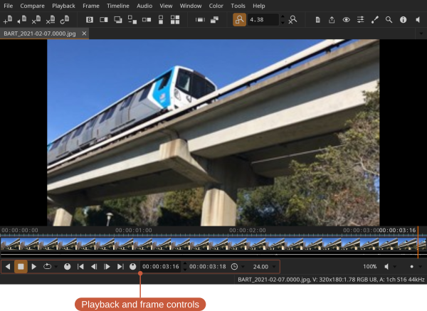
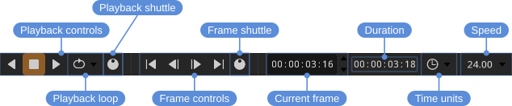

Playback and frame control


- Playback shuttle — click and drag to vary playback speed
- Frame shuttle — click and drag to scrub the current frame
- Time units (e.g., frames or timecode)
Playback controls
Start, reverse, and stop playback from the Playback menu or the playback controls.
Locations: Playback menu, Playback controls
Shortcuts:
- Forward — L
- Reverse — J
- Stop — K
- Toggle playback — Space
Speed multiplier
You can temporarily speed up playback by clicking the forward (or reverse) button repeatedly: each click doubles the playback speed. Clicking the opposite direction slows it back down.
For continuous control, click and drag the playback shuttle: dragging in the playback direction speeds up, dragging the opposite way slows down, and releasing returns to normal speed.
Playback speed
Playback runs at the file's own frame rate. To play at a different rate, click the speed value in the playback controls and choose from the presets; the Default entry returns to the file's rate. The HUD's Time item shows the rate actually being achieved alongside the requested one.
Frame navigation
Step through frames or jump to the start or end from the Frame menu and the frame controls. Stepping can move by one, ten, or a hundred frames at a time.
Locations: Frame menu, frame controls
Shortcuts:
- Start / End — Home / End
- Previous / Next frame — Left / Right
- Previous / Next ×10 — Shift+Left / Shift+Right
- Previous / Next ×100 — Ctrl+Left / Ctrl+Right
- Focus current frame (scroll the timeline to the playhead) — Ctrl+F
Loop modes
Playback can loop in three ways, set from the Playback menu or the loop button in the playback controls:
- Loop — Repeat continuously.
- Once — Play through once and stop.
- Ping-Pong — Play forward to the end, then reverse, and repeat.
Jumping
You can jump backward or forward by one or ten seconds.
Locations: Playback menu
Shortcuts:
- Jump back 1s — Shift+J
- Jump back 10s — Ctrl+J
- Jump forward 1s — Shift+L
- Jump forward 10s — Ctrl+L
In and out points
In and out points can be set to limit playback to a section of the timeline.
Locations: Playback menu, Playback controls
Shortcuts:
- Set in point — I
- Reset in point — Shift+I
- Set out point — O
- Reset out point — Shift+O
Dropped frames
If playback isn't keeping up, the HUD shows the number of dropped frames in real time.
Locations: View menu